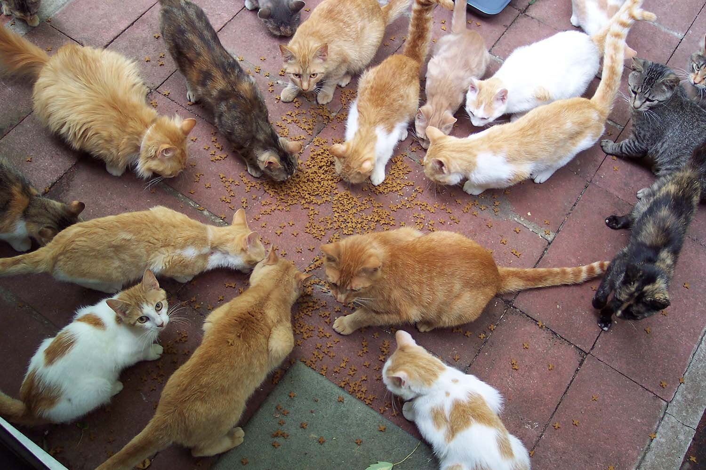
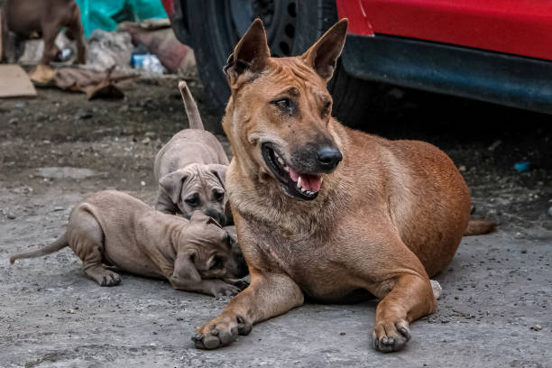
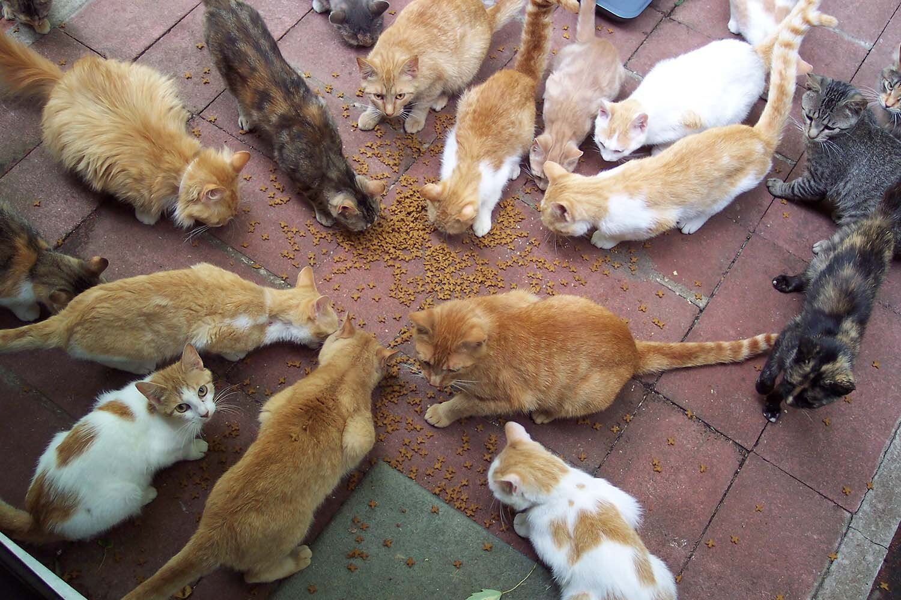
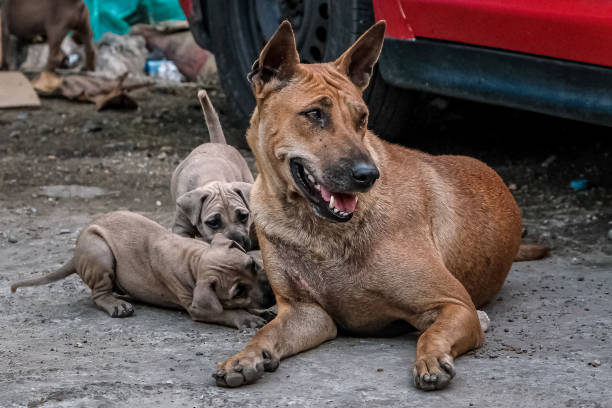

Caring for Pets, Protecting Communities
StraySafe makes pet care visible in our barangay. You can see which pets are already kapon, dewormed, or vaccinated. Together, we help build a safer and healthier neighborhood.
Register Your Pet 


